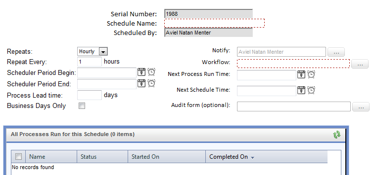
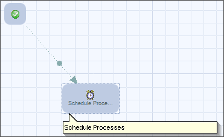
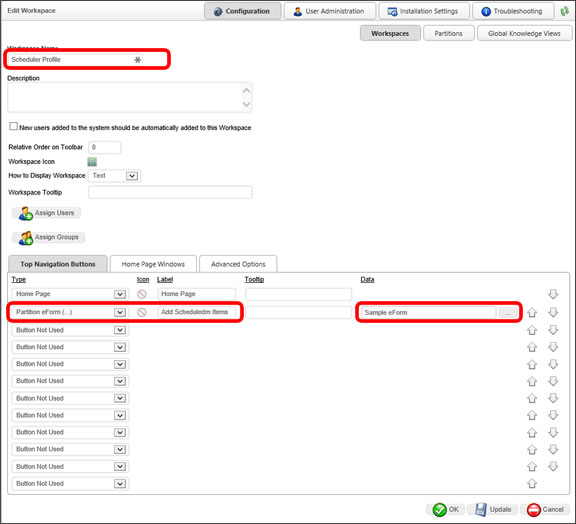
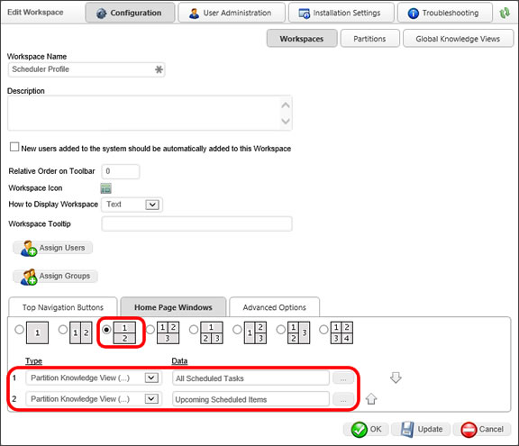

Use of the Scheduler module has largely been deprecated in the product. BP Logix recommends using the Goal object for most scheduled operations that were formerly implemented via the Scheduler Module.
Use of the Scheduler module has largely been deprecated in the product. BP Logix recommends using the Goal object for most scheduled operations that were formerly implemented via the Scheduler Module.
Use of the Scheduler module has largely been deprecated in the product. BP Logix recommends using the Goal object for most scheduled operations that were formerly implemented via the Scheduler Module.
In addition to the components described in the preceding section, a working PDSM implementation will include:
The schedule form definition includes all the fields required by the schedule process Custom Task, as well as any other information the user might wish to include. A typical schedule form might look like the example shown below. In addition to the fields required by the Custom Task, this form also includes a serial number, the name of the form creator, and other information.
A new form instance is created for each different process, or schedule, that has to be run. For example, if process “A” has to run every Monday and process “B” has to run every Tuesday, there would be two instances of the schedule form created. In addition, if process “C” has to run every day at noon and again every day at 5pm, there would also need to be two instances of the schedule form: one specifying that the process be run every day at noon, and another specifying 5pm.
The form isn't configured to launch a process when submitted.


Each time the schedule Workflow runs, the Custom Task examines every schedule form instance. If the current time falls within the specified start date / end date window, it will launch the appropriate process specified in a given instance if (a) the next run time has been reached, or (b) the next run time is blank. Therefore, one way to force an execution of a scheduled process is to manually clear the next run time field within the relevant form instance.
Each time a process is launched via the PDSM, a link to the schedule form instance that caused it to be launched is attached to the new process as a reference. As noted above, the schedule form sometimes includes information that the new process may need to use, so having the ability to access the information on the form is valuable. Furthermore, the PDSM uses this connection to determine which processes were started by which schedule form instance.
However, the schedule form instance is dynamic. For example, each time the form is used to launch a process, the next run time is updated. It is sometimes desirable to have available a static version of the data as it existed when the process was started. The audit form fills this role.
The audit form can be a near-replica of the schedule form, or it can be different, but it always contains one or more fields inherited from the schedule form. In order to distinguish the fields on the audit form from those on the schedule form, the names of the equivalent controls are changed to include a user-specified string (see “Audit Field Prefix”, above). So, for example, if the next run time control on the schedule form is called “NEXTRUN”, then the “AUDIT_NEXTRUN” field on the audit form will be the equivalent.
When the scheduled process is launched, the PDSM copies fields from the schedule form to the equivalent fields on the audit form. So, in the preceding example, “AUDIT_NEXTRUN” would contain the data that filled the “NEXTRUN” field in the schedule form—the time this instance was scheduled to run.
Once the copy is complete, the original schedule form instance is updated, such that the next run time field now contains the time and date of the subsequent scheduled execution of the process. So right away the schedule form instance and the audit form diverge.
The audit form is useful as a tool to examine when and why a particular process instance was launched.
It is recommended that you create a Workspace that contains the items for the scheduler components. The Workspace should contain a button to the scheduler Form (for creating new scheduled items) and two portlet windows pointing to the "All Scheduled Items" and the "Upcoming Scheduled Items" Knowledge Views.

